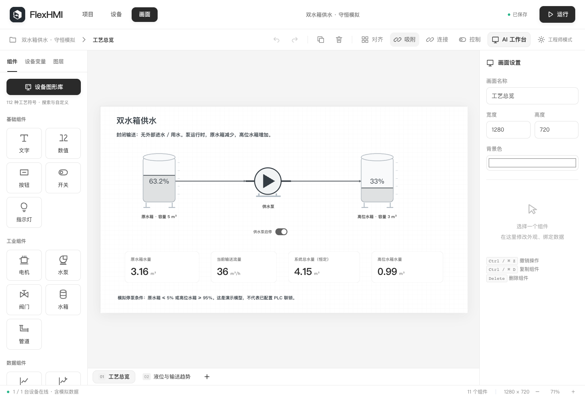

Data visualization
Connect points, bind components and assemble live values, trends and alarms. Preview, save and load the complete project.
Build HMI screens with drag-and-drop editing, automatic layout and routing. Let AI and external agents create checked engineering plans, then review their effects before applying them.

Connect points, bind components and assemble live values, trends and alarms. Preview, save and load the complete project.
Add configurable rules and step flows. Inspect dependencies, start control explicitly and take over manually when needed.
Use a local knowledge library and observed data to propose changes with citations. Model quality and source suitability still need evaluation.
Version 0.4.4 · Preview · Windows and macOS · Released September 11, 2026
0.4.4 · 53.6 MB
Download installer0.4.4 · 57.4 MB
Download installer0.4.4 · 208.8 MB
Download DMG0.4.4 · 182.1 MB
Download DMGPreview limitations: Windows installers are unsigned. macOS builds have ad-hoc signatures but are not Apple notarized. Real-model generation quality and on-site PLC acceptance are not yet qualified.
The macOS installation note still mentions 0.4.3 in its opening paragraph; the application itself is 0.4.4.
Release notes and verification · SHA-256The latest source separates simulation commands from read-only feedback, initializes feedback from the process model, and lets AI/MCP plans switch process models alongside device settings. Previews now report communication restarts and control pauses consistently.
These updates are available in source and are not included in the 0.4.4 downloads above.
View source changes